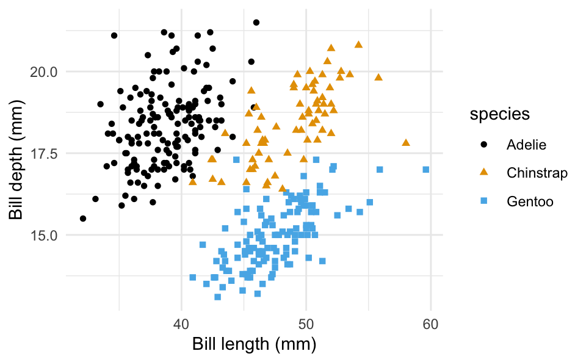

A quick n’ dirty intro to Quarto
This website was made to showcase different aspects of Quarto. While making it, I may have gotten a little carried away with all you can do. I got excited!
Getting Started
Quarto enables you to weave together content and executable code into a finished document. To learn more about Quarto see https://quarto.org.
Quarto can render in real-time code written using VS Code, Jupyter, RStudio, Neovim, and (text) Editor. For this presentation, we’ll focus on how Quarto can improve our lives in RStudio.
Quarto works by using knitr to execute your code chunks and create a markdown document (.md). This document is then processed by pandoc into your format of choice.
Step 1: Download Quarto
You can find the link to download here: https://quarto.org/docs/get-started/
Step 2: Choose your tool
We’ll be using Quarto in RStudio. Starting is as easy as opening RStudio and selecting “Quarto Document” or “Quarto Presentation,” depending on your preference, just as you would “R markdown.” The extension of the document will be “.qmd” rather than “.rmd”.
Aesthetics
Quarto allows you to toggle between your source code (nearly identical to a .rmd file) and a “visual” version of your rendered code. You’re able to edit both as you prefer. The application also allows you to integrate objects more easily into your documentation, providing a tool bar controlling font size, formatting, and more. You can add
links (An educational tutorial with Prof Mine Cetinkaya-Rundel)
-
citations (Koslovsky et al. 2017)
- These are especially cool because Quarto will generate a references.bib file for you. You can easily cite R packages, enter DOI’s to find papers, and add them all to your references.bib file as you do.
- Definitions
-
Pretend this is a new word.
math equations \[\theta = \text{Yes you can do this in .rmd but it generates the \$ for you when you do it in Quarto}\]
-
cross references Figure 1
- In order for this to work you must have “#| label: fig-” and “#| fig-cap:” in your code chunk.
-
etc. 🥰
easily.
Running Code
When you click the Render button a document will be generated that includes both content and the output of embedded code. You can create chunks as you would in .rmd, or select an Executable Cell from the “Insert” tab. Quarto can create executable cells in many languages, including RCpp.
Note in this presentation, I added a “code-fold: true” beneath the “format: html:” in the YAML to hide the code.
I also added “code-link: true”. This generates hyperlinks for all your commands, which can be a great resource for students following your code.
In your code chunk, you can still include output specifications (like “message = FALSE”) in the header as done in .rmd files, OR you can use “#|” to make adjustments to your output and figures.
In the code chunk below, I used
#| warning: FALSE
#| label: fig-my-chunk
#| fig-cap: This is my figure caption.
#| fig-cap-location: bottom
#| fig-width: 5
#| fig-asp: 0.618
#| fig-alt: This text will appear when I select the attributes of my figure.
Code
ggplot(penguins,
aes(x = bill_length_mm,
y = bill_depth_mm,
color = species,
shape = species
)) +
geom_point() +
theme_minimal() +
scale_color_colorblind() +
labs(x = "Bill length (mm)",
y = "Bill depth (mm)")
For more on formatting figures and exploring formatting data frames, you can look here.
Presentations
If you’d like to make a Quarto presentation instead, it’s fairly similar, where your headers will indicate new slides in the presentation. These titles are available to preview in your Outline to the right of the visual editor.
You can edit the “|# output-location:” in the code chunk to format your figures with your codes on the slides, or use “|# output-location: slide” to have your figure appear on the slide following the code.
If your code/text is too large for your slide, you can use the Outline to access the chunk attributes and adjust text size, too. Or, text color. That’s how I made this chunk blue!
Websites
To create a website like this one:
Create a .qmd file. Or two, or three. As many as you’d like!
In RStudio, open a “Text File” in your project.
Save this file as “_quarto.yml”
-
In it, include something like this:
project:
type: website
website:
title: “How Cool is This”
navbar:
left: - STAT600_QuartoPres.qmd
- For_Funsies.qmd
Quarto will generate things like “project” and “website” once you start typing them.
Here, I’ve put the navigation bar for my website on the left, and I’ve indicated which .qmd files in my project I’d like included in the navigation bar on my website.
Re-load your project in RStudio.
You should now have a “Build” tab next to your “Environment” and “History” (and other tabs). Under this, click “Render Project” to generate your website.
Now, when you click the .html files in your project’s “site” folder, you should be able to view the file in your web browser.